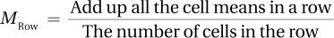
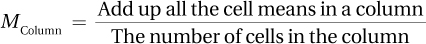
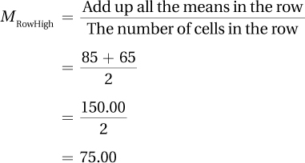
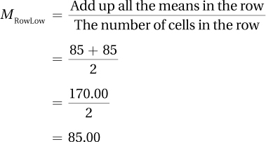
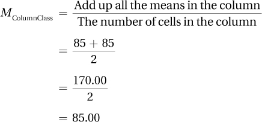
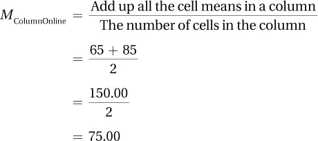

More complex tools are needed to understand, to take apart, more complex things. A basic tool, like a rock, will get you into a skull and show you that there is grey soft matter in there. But, to see finer details of the brain, a saw and a scalpel are more helpful. As tools have evolved, think electron microscopes and MRI machines, so has our understanding of the brain.
422
Statistical tests are statisticians’ tools. Tests like a two-sample t test are simple tools—all they allow a user to do is compare two groups (e.g., What is the impact of 0 vs. 1 drink of alcohol on driving?). One-way ANOVA allows more groups to be compared at once, so it allows more complex questions to be addressed (How does 0 vs. 1 vs. 2 vs. 3 vs. 4 drinks affect driving?). But, the most complex ANOVA questions involve the influence of multiple factors at once (What is the impact on driving of different doses of alcohol for men vs. women, depending on the time elapsed since the last meal?)
A “factor” is ANOVA-speak for an explanatory variable, an independent variable or a grouping variable that is thought to have some impact on the dependent variable. Factorial ANOVA can have two, three, four, even five factors or “ways.” (The driving study had three: dose of alcohol, sex, and time since meal.) As the number of ways increases, a factorial ANOVA becomes harder to interpret. In this chapter, we’ll limit ourselves to two factors and what is called two-way ANOVA.
To introduce two-way ANOVA, here’s an example about the influence of two factors, nature and nurture, on personality. Suppose a researcher was studying factors that influence altruism and was interested in both how the children were reared (nurture) and what their nervous systems were like (nature). Using adopted children as participants, the researcher classified the children as falling into one of three levels—high, medium, or low—based on how altruistic their adoptive parents were. The adoptive parents reared them, so these three levels of altruism represented the influence of nurture. In addition, the researcher classified the children as being in one of two levels—high or low—based on how altruistic their birth parents were. Birth parents, who provide genetic material, represent the influence of nature. This two-way classification would allow the researcher to study the effect of both nature and nurture at the same time (see Table 12.2).
In Table 12.2, there are two levels of one grouping variable and three levels of the second grouping variable, so this two-way ANOVA would be called a 2 × 3 ANOVA (pronounced “two by three”). (Note that it doesn’t matter which number goes first: It’s fine to call it a 3 × 2 ANOVA.) Each child in the study would be classified as fitting into only one of the six cells in Table 12.2. This design would allow the researcher to examine the influence of two factors on children’s altruism at once.
423
The type of two-way ANOVA being taught in this chapter is a between-subjects ANOVA. Between-subjects is an ANOVA term for independent samples. In a between-subjects design, different cases make up the different groups. Within-subjects is the ANOVA term for dependent samples. If different participants each rated the taste of a single ice cream (high-fat, low-fat, and no-fat), that would be a between-subjects design. If each taste-tester rated all three of the ice creams, that would be a within-subjects design.
Q Can an ANOVA have more than two ways?
A Absolutely. There can be a three-way ANOVA, a four-way ANOVA, and even more ways than that. The general term for a multiple-way ANOVA is factorial ANOVA (ways are also called factors). It is rare, however, that a researcher designs an experiment that needs more than a three-way ANOVA because the number of participants required becomes too large and the results become complicated to interpret.
There is an advantage to completing a single two-way ANOVA with two explanatory variables instead of two separate one-way tests, one for each of the explanatory variables. To explore this advantage, imagine a study that compares the final point total in a statistics class based on two explanatory variables: (1) type of instruction (whether students take the class in a classroom or online), and (2) level of math anxiety (whether students are high or low on math anxiety). Each factor has two levels (classroom vs. online, and high math anxiety vs. low math anxiety).
To conduct separate one-way tests, a researcher would need to do two separate studies:
To examine the effect of type of instruction, the researcher would get a sample of students, assign some to take the course in a classroom, others to take it online, and then compare how much they learned.
To examine the effect of anxiety, the researcher would put together another sample of students, classify them as high or low on math anxiety, have them all take the same course, and then compare how much they learned.
To conduct the study as a two-way ANOVA means examining both explanatory variables at once. The researcher would obtain one sample of students, classify them as high or low on math anxiety, and then assign half of each type to take the course in a classroom and half to take it online. That would give four groups:
High-anxiety students taking the course in a classroom (Cell A)
High-anxiety students taking the course online (Cell B)
Low-anxiety students taking the course in a classroom (Cell C)
Low-anxiety students taking the course online (Cell D)
424
The arrangement of the four groups in this study is diagrammed in Table 12.3. Notice how the two ways yield four cells arranged in rows (levels of math anxiety) and columns (where the course is taken). The two explanatory variables are crossed, which means that every level of one explanatory variable is paired with every level of the other explanatory variable.
There are two advantages to completing this study as a two-way ANOVA rather than as two one-way ANOVAs. First, it allows the study to be completed and analyzed in one pass, not as two different studies. Second, and more important, the person conducting the study gains more understanding because the variability in the dependent variable can now be divided into three effects. By doing the study as a two-way ANOVA, an effect has been gained.
The three effects being studied are:
Does type of instruction affect learning?
Is level of math anxiety related to learning?
Do type of instruction and level of math anxiety interact to affect learning?
The first two effects are called main effects. Main effects examine the overall impact of an explanatory variable by itself. The third effect, the interaction effect, is unique to two-way ANOVA (and factorial ANOVA). An interaction effect occurs if the impact of one explanatory variable on the dependent variable depends on the level of the other explanatory variable.
When the lines are not parallel, an interaction exists.
So what exactly is an interaction effect? The easiest way to show what it is, is with a figure. Figure 12.1 gives the outcome for a 2 × 2 ANOVA of type of instruction and math anxiety on performance. When the lines are not parallel, then an interaction exists. That’s what is seen in Figure 12.1, which illustrates that the low-math-anxiety people perform equally well whether in the classroom or online, while the high-math-anxiety people do more poorly when taking the class online. The two explanatory variables interact to determine the outcome.
Q How nonparallel do the lines have to be for an interaction to occur?
A If the lines are close to parallel, the interaction effect probably is not statistically significant. There should be a reasonable amount of deviation from parallel to speculate that an interaction effect has occurred.
425
When an interaction takes place, the answer to the question of whether a main effect exists is, “It depends.” Here are questions about the two main effects for the type of instruction/math anxiety study:
Does type of instruction have an impact on how much one learns?
It depends on how much math anxiety one has. If a person is low on math anxiety, then he or she will learn equally well whether in the classroom or online. However, if a person is high on math anxiety, then he or she would be wise to take the course in a classroom.
Is level of math anxiety related to how much one learns?
It depends on which course one takes. If a person is taking the course in a classroom, then math anxiety doesn’t matter. However, if a person is taking the course online, then he or she will probably do better if he or she is low on math anxiety.
When there is an interaction, one needs to be careful about interpreting main effects. To understand why, look at the results for the type of instruction/level of math anxiety study, which are presented in Table 12.4.
Each of the cells has a mean for one of the four groups—a mean of 85 for high-anxiety students in the classroom, a mean of 65 for high-anxiety students online, and so on. Rather than attend to the cell means, pay attention to the means for each row and for each column. Each cell has the same sample size—and that will be true for all examples in this chapter—so the means for the cells in a row or column can be averaged to find the mean for that row or column. The formula for calculating row means and column means is shown in Equation 12.1.
426


where MRow = row mean
MColumn = column mean
The researcher would calculate the mean for the high-math-anxiety row as follows:

The researcher would calculate the mean for the low-math-anxiety row as follows:

427
The researcher would calculate the mean for the classroom instruction column as follows:

And, finally, here’s the mean for the online instruction column:

What information do the row and column means provide?
The row means give information about the main effect of level of anxiety on learning. Comparing the row mean of 75.00 for high-math-anxiety students to the row mean of 85.00 for the low-math-anxiety students suggests that level of anxiety predicts performance: it appears as if the higher the anxiety, the worse the performance. However, we already know, from the interaction effect, that how anxiety affects performance depends on the type of instruction. Though a main effect for type of anxiety exists, interpreting the interaction effect gives a better understanding of the results.
The column means give information about the main effect of type of instruction on learning. Comparing the column mean of 85.00 for the classroom students to the column mean of 75.00 for the online students suggests that type of instruction affects performance: it seems as if students learn more in the classroom. However, we already know, from the interaction effect, that how type of instruction affects performance depends on a person’s level of math anxiety. Again, though a main effect for type of instruction exists, interpreting the interaction seems to do a better job of explaining the results.
In a two-way ANOVA, when there is a statistically significant interaction, statistically significant main effects often play a background role.
This point is important: in a two-way ANOVA, when there is a statistically significant interaction, statistically significant main effects often play a background role.
To help make the difference between main effects and interactions clear, consider an example without an interaction. Suppose a physical therapist had equal numbers of men and women, then measured each person’s hand strength. For half of each sex, the physical therapist measured hand strength in the dominant hand. For the other half, she measured hand strength in the nondominant hand.
The graph in Figure 12.2 shows the results—men are stronger than women and the dominant hand is stronger than the nondominant hand. The two lines are parallel, so no interaction exists. In this case, it makes sense to interpret the main effects, which can be seen by examining the row means and the column means found in Table 12.5. There is no “it depends” in answer to the two questions below:
428
Is there a difference in hand strength by sex?
Yes. Men have more hand strength than women, both in the dominant hand and nondominant hand.
Is there a difference in strength between dominant and nondominant hands?
Yes. Dominant hands are stronger than nondominant hands, both for men and for women.
For practice with main effects and interaction effects, let’s look at some data on aggression in boys and girls. Suppose a developmental psychologist, Dr. O’Grady, administered an aggression scale to a random sample of 100 boys and 100 girls. Half of each sex had their level of physical aggression measured (getting into fights, throwing sticks and stones, etc.) and half had verbal aggression measured (spreading rumors, telling lies, etc.). On each scale, a higher score means more aggression.
Dr. O’Grady’s study compares the means for groups that differ on two independent variables, sex and type of aggression, so it is an example where results are analyzed with a two-way ANOVA. Each way has two levels, so this is called a 2 × 2 ANOVA and there are four cells. The results from Dr. O’Grady’s study can be found in Table 12.6, where each case fits in one, and only one, cell. For example, a boy who answered questions about physical aggressiveness would be in the top left cell.
429
The row means for boys (37.50) and girls (35.50) don’t show much of a main effect by sex. Boys are slightly more aggressive on average, but this 2-point difference could easily be due to sampling error. Even if the small difference indicated a difference between population means, it probably wouldn’t be a meaningful difference.
The column means tell a similar story—the amount of physical aggression (M = 36) and the amount of verbal aggression (M = 37) are about equal. Verbal aggression is just slightly higher, but it seems possible that the levels of verbal aggression and physical aggression are the same in the populations and that the difference observed between the samples could easily be due to sampling error. Based on these column means, it seems that there is little difference in the use of the two types of aggression.
For a different view, look at the interaction effect graphed in Figure 12.3.
Are boys more aggressive than girls?
It depends on the type of aggression. Boys are more aggressive physically, and girls are more aggressive verbally.
Is physical aggression as likely to occur as verbal aggression?
It depends on a person’s sex. Physical aggression is more likely to occur in boys and verbal aggression in girls.
430
It is clear in this example that there is an interaction effect. This is apparent both from the nonparallel lines in Figure 12.3 and from the use of “it depends” in interpreting the results. To reiterate: When an interaction effect exists, be cautious interpreting the main effects.
Apply Your Knowledge
12.01 Classify each scenario in terms of the number of ways and the number of levels each way has. For example, classify each scenario as a 2 × 3 design, a 2 × 3 × 5 design, or some other variation.
Men and women who are right-handed or left-handed and who use razors with blades vs. electric razors are compared in terms of satisfaction with the smoothness of their shaves.
Male and female students studying for traditionally female careers (e.g., nursing) or for traditionally male careers (e.g., engineering) are compared in terms of how androgynous they are.
12.02 Each cell in the matrix below reports the mean of six cases. (a) Calculate the row and column means. (b) Interpret the two main effects.
| Condition 1 | Condition 2 | |
| Group 1 | 12.00 | 18.00 |
| Group 2 | 3.00 | 9.00 |
12.03 Thirty-six cases were randomly divided into four samples. Each person took either a low dose or a high dose of a drug and was queried about either the physical side effects or psychological side effects. Each cell in the matrix below reports the mean number of side effects reported by a sample of nine cases. (a) Graph the cell means. (b) Decide if there is an interaction. (c) Interpret the effect of the two conditions on the two groups.
| Physical Side Effects | Psychological Side Effects | |
| Low Dose | 10.00 | 10.00 |
| High Dose | 10.00 | 18.00 |